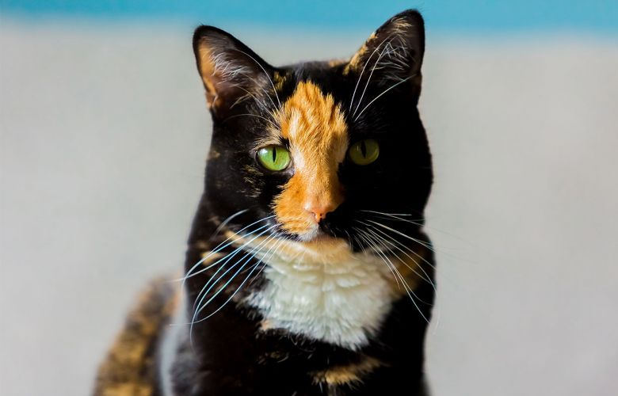
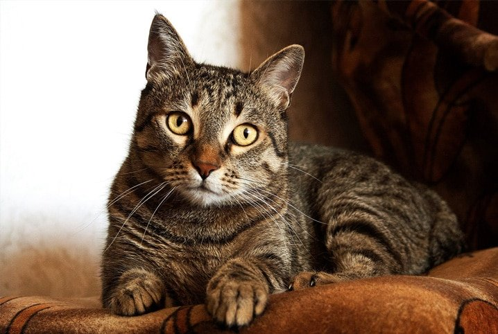
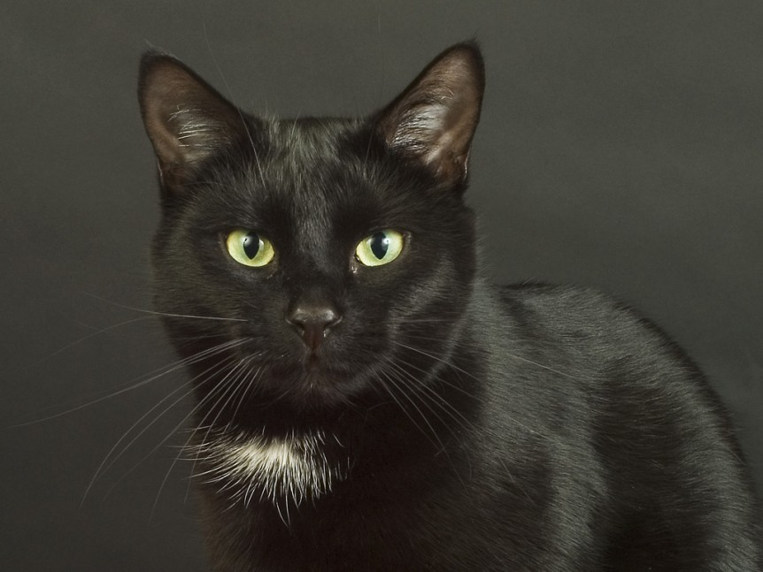

Geralmente fêmeas, o que já é uma vantagem por serem menos territorialistas, vira-latas tricolores são perfeitas para quem não consegue se decidir entre qual estampa acha mais linda em um bichano. Trazem consigo as 3 cores principais de pelagem (branco, preto e laranja) e sempre terão uma combinação única, fazendo bem raro alguém ter uma gata parecida demais com a sua.
A estampa mais popular de gato pelas ruas brasileiras é a rajada, então é só olhar pela janela, escolher seu novo gato e apropriar-se da companhia do bichinho. Além de ser um curinga: nunca sai de moda, gatos rajados são práticos no dia-a-dia porque seus pelos de cor esquisita não marcam muito nem em roupas pretas nem em roupas brancas. Ideal para quem frequenta tanto os shows de rock pesadão quanto as giras do terreiro do bairro.
Os rejeitados de toda ninhada! Você nunca vai ter que brigar com outros possíveis adotantes por um gatinho desses: você quer? Ele é seu! E você ainda faz um grande favor á humanidade por prevenir o triste fim de abandono que tem muito mais chance de acontecer para um felino preto do que para qualquer outro. E, ao contrário do que dizem as más línguas, gatos pretos não trazem azar, mas sim sorte! Afinal, já afastam pessoas imbecis que pensam esse tipo de asneira... Ainda não há comprovação científica, mas por associação somos levados a acreditar que pode funcionar também contra minions.
